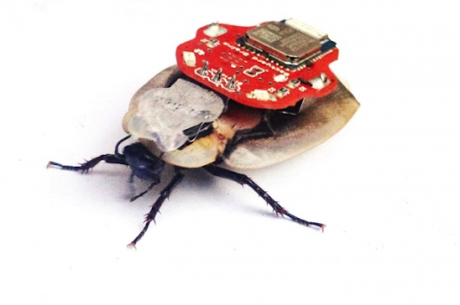
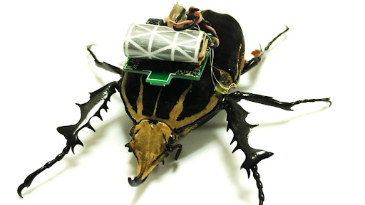
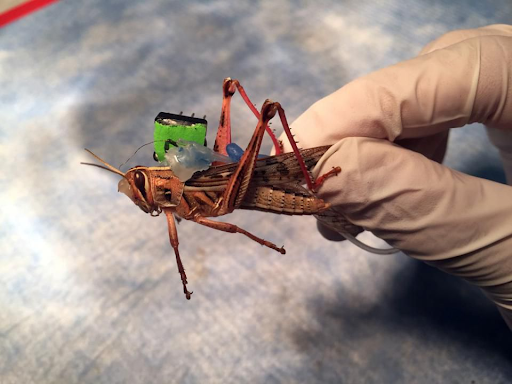

Cyborg Insects
July 5, 2021 5:30pm ISTWe all would have fantasized in our childhood about becoming superheroes who could do anything to save the world! Imagine ourselves if we had such incredible powers and superhuman strength! One way to get superhuman powers would be with the help of technology.
We must have seen or read about the 'cyborg' from DC comics, who got superpowers from an alien technology called the motherboard. Cyborg had the consciousness of a human but computational power and physical strength of a machine. Similarly humans have tried to give other creatures some powers in order to take control. This time, scientists hijacked insects and turned them into cyborgs.
It may seem weird to the readers, but the researchers have been working, since the 1990s, manipulating beetles, moths, and even spiders, turning them into insect-computer hybrid robots.

Cyborg insects are hybrid robots with a living insect platform and microdevices that control their motion. These hybrids have been handled via electrical, visual, thermal, or chemical stimulations, electrical being the most common among them. Muscles or neurons are electrically stimulated by the electrodes sealed into the insects' exoskeleton. Implanted microfluidics have been used to modulate the flight of insects by administering neurotransmitters to the CNS.
Why did the scientists decide to create a hybrid rather than building a typical robot?
Programming a robot to think like an insect is challenging, says Alison Abbott (Nature's senior European correspondent), but it could help breed machines as maneuverable as flies.
Insects belong to the most diverse and extensive class among animals. They have evolved over many years, and are found in almost all land on Earth in different habitats, this diverse range of livelihood can give an insight into a vast array of functions and mechanisms. Their locomotive skills are also very diverse and unique which have inspired scientists to develop insect biomimetics. However, building robots that can move the same way as insects is not that simple. We cannot simply mimic how nature has designed these organisms but being a cyborg is a go without a hitch. They also provide a good platform for verifying any biological hypothesis regarding some unknown function for their body parts.
The US Dept of Defense’s Hybrid Insect Micro-Electro-Mechanical Systems program is sponsoring research for implanting microchips into the insects during the early stages of metamorphosis to direct the bugs via their neural or muscular connection with these implants. [1]

Dr.Hirotaka Sato and his team from Singapore's Nanyang Technological University have designed a cyborg by using a Beetle of species Mecynorrhina torquata, native to tropical Africa, by controlling their motor functions via electrical stimulations. They implanted eight pairs of electrodes and manipulated the motion of its leg, which turned out to be 100% successful.
"This was the first demonstration of living insect locomotion control with user-adjustable walking gaits, step lengths, and walking speeds."[2]

One of the recent advancements in this field has been made by exploiting the insect's olfactory system that allows it to sense and discriminate the smell of explosives within a few hundred milliseconds of exposure.
The envisioned approach is not that different from the 'canary in a coal mine' approach, where the viability of the entire organism is used as an indicator of absence/presence of toxic gases," says Barani Raman- head of the project, at Washington University in St. Louis.”
This bio robotic chemical sensing system has been studied on an American locust Schistocerca Americana, due to its well-studied olfactory system, easy recovery after surgeries, their ability to train them to recognize odorants, and its functionality in both solitary and gregarious phases. Their tiny antennas are clustered with several olfactory neurons from which they bottlenecked a few to sniff out bombs like any artificial bomb-detecting system![3]
With the recent breakthrough of technology, new strategies and methods are being developed to control insects. The applications of insect-computer hybrid systems are advancing day by day, and researchers aim to control and stimulate every muscle associated with their locomotion. Even though scientists have acknowledged that cyborg insects have many drawbacks, like a short lifetime due to this insect surgery. But they are helpful in many ways, they only use a limited power compared to an actual robot and could benefit various fields, like search and rescue missions, espionage, and ethology studies.
Should We Make Cyborg Beetles?
Cyborg insects have been used in various military tests in recent times. As this potential future begins to dawn, controversies about the " cyborg insects" continue to be debated. Although the insect population outweighs the total humans on earth, their massive decline profoundly impacts ecosystems. The entomologists refer to this as 'death by a thousand cuts.' [4]Reports suggest an annual reduction of 1-2% in some insect populations, which requires immediate attention.[5] Now that humans have successfully manipulated insects, it is possible that someday this might be implemented in large animals as well. Experimenting with insects will help us avoid mistakes in higher organisms, such as rats, mice, and ultimately people. At the same time, serious ethical issues regarding the use of insects, free will, etc., would become more pressing. Also, the chances are that the technology falls into the wrong hands. Despite the arguments stated above, this discipline of merging the organic with the synthetic is only a beginning.
References:
Author :
Kanthi M P
BS-MS StudentIISER TirupatiRelated Articles
Camouflage: A strategy for survival
November 12, 2020 6:45pm IST
If we look into the Oxford dictionary for the meaning of camouflage we will get: “the way in which an animal’s colour or shape matches what is around or near it and makes it difficult to see”. They use it as a defensive mechanism as well as an offensive mechanism.

Cancer And Its Prevelence in Arthopods
November 12, 2020 4:55pm IST
Cancer is one of the most dreaded diseases in humans. But are there any pieces of evidence of cancerous growths in arthropods? Do the most diverse group of creatures on earth suffer from tumorous growths too? Let’s find out.

How Ants Moves In Ques ?
November 12, 2020 4:47pm IST
We have all seen the ants walking along a line towards a food source. But have you thought about how they could be so precise in their movement? Are there any traffic ants or road maker ants that make sure that ants walk in a designated path? They sure don’t have GPS to navigate their way around.